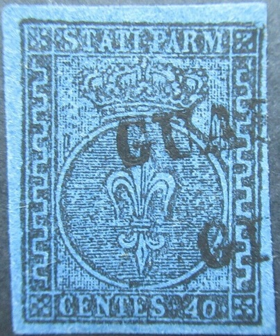
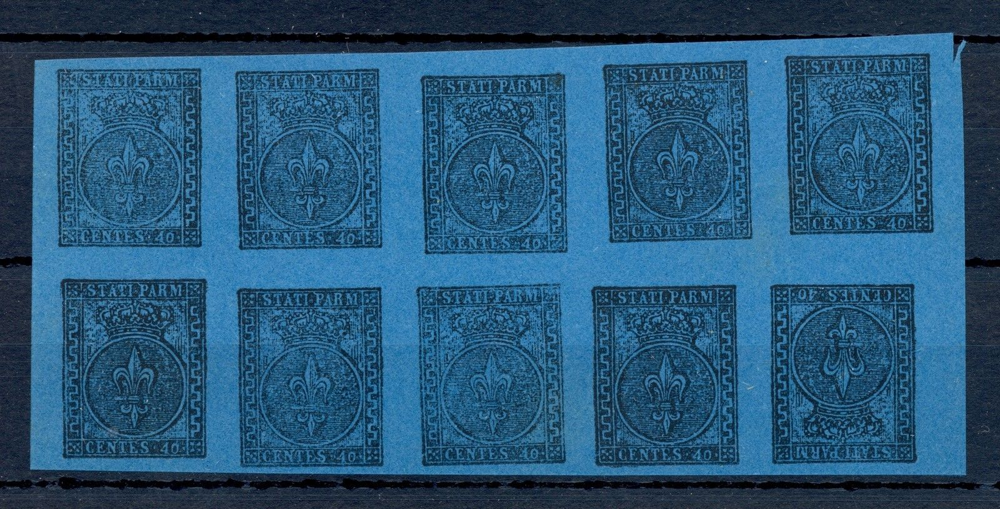
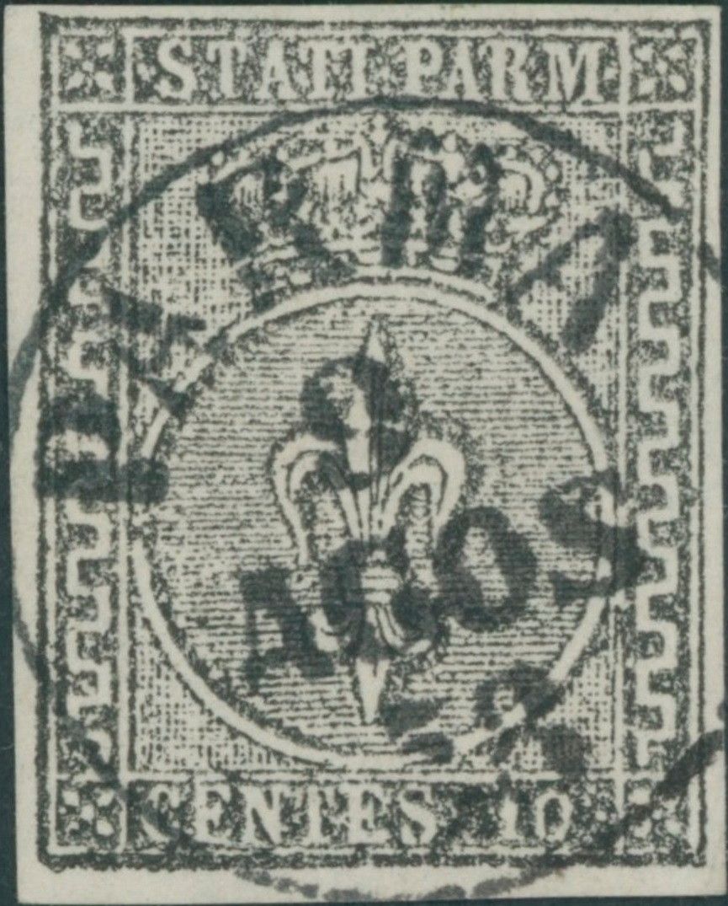
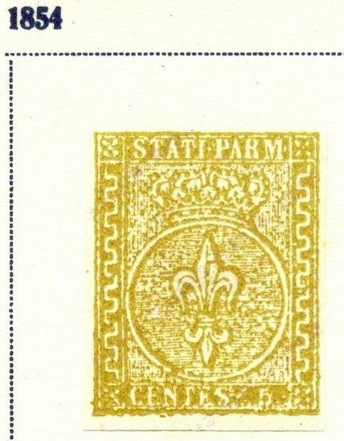
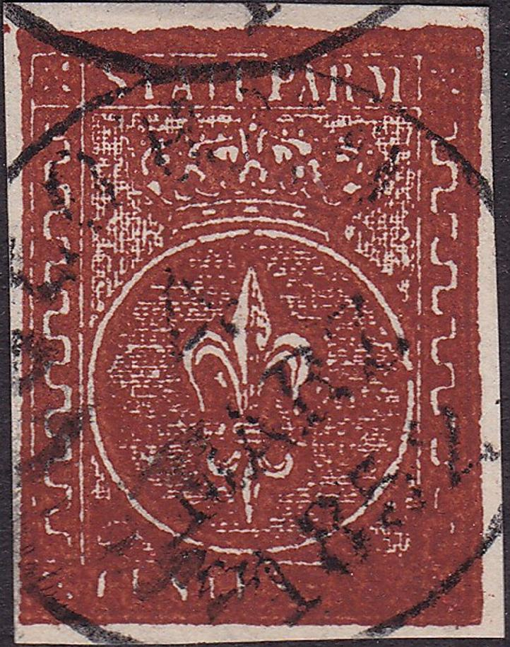
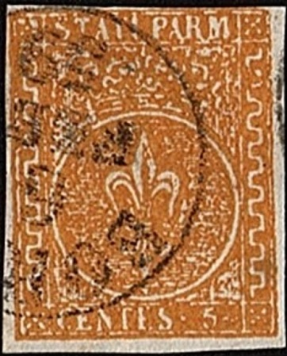

{kind=link}

Probably Fournier forgeries, among the many cancels a "PIACENZA 6 OTT 57" cancel as can be found in the Fournier album. Also a "COLORNO 4 MARZ 1852" and a "BORGO 6 FEBR 59" forged cancel.
Return To Catalogue - Parma 1852 issue, forgeries, part 1 - Parma 1852 issue - Parma 1857 issue - Parma 1859 issue, part 1 - Parma 1859 issue, part 2 - Italy
Note: on my website many of the
pictures can not be seen! They are of course present in the
catalogue;
contact me if you want to purchase the catalogue.
Currency: 1 Lira = 100 Centesimi
Parma 1852 issue,
forgeries, part 1,
Parma 1852 issue, forgeries, part 2.
It should be noted that Fournier also offered first choice forgeries of this issue; 3 values, a 40 c black on blue, 5 c yellow and another value (probably the 10 c value). They were offered for 1 Swiss Franc in his 1914 pricelist. Among them there are tete-beche forgeries of the 40 c value (only the 15 c is genuinely known in tete-beche).

Probably Fournier forgeries, among the many cancels a
"PIACENZA 6 OTT 57" cancel as can be found in the
Fournier album. Also a "COLORNO 4 MARZ 1852" and a
"BORGO 6 FEBR 59" forged cancel.
Forged Fournier cancels of Italy, taken from a Fournier Album;
reduced sizes, among them the "PIACENZA 6 OTT 57"
cancel and a "COLORNO 4 MARZ 1852" cancel
The Billig guide from Parma says that no original stamps with a closed "4" exist, which makes these forgeries easily identifiable, regardless or how many forged cancels were applied on them. The background behind the crown is quite defective. There are some very characteristic vertical lines in the background just above the central circle in the 40 c value. I think this is the forgery described in the Serrane Guide; the "P" of "PARM" is connected by a line to the frameline above it. In the 'Fournier Album of Philatelic Forgeries' I have seen a 5 c value with "BORGO 6 FEBR 59" cancel as in one of the above forgeries. The above shown "PD" cancels are not shown in the Fournier Album (though similar "PD" cancels from Switzerland were forged by Fournier). A whole sheet of these forgeries can be found above on a page of the 'Fournier Album'. These forgeries are often offered as genuine.

Half of a sheet (bottom part) of these Fournier forgeries. A full
sheet consists of 4 rows of 5 stamps, the last stamp in the
bottom row is inverted.
Page of a 'Fournier Album of Philatelic Forgeries' with some
forgeries of the Papal States and the "BORGO 6 FEBR 59"
forged cancel

10 c Fournier forgery as taken from a Fournier Album.


Possibly Fournier forgeries as well with the cancel "PARMA 9
AGOS 58" as can be found in 'The Fournier Album of
Philatelic Forgeries'
Page from 'A Fournier Album' with an example of the forged cancel
"PARMA 9 AGOS 58"
Another Fournier forgery that can be found in 'The Fournier Album of Philatelic Forgeries' is the 5 c yellow value with cancel "BORGO 6 FEBR 59" in a single circle. A small image of such a stamp can be found on the page with Fournier forgeries under 'first forgeries'.

5 c yellow Fournier forgery as taken from a Fournier Album.


A 5 c yellow stamp with a "PARMA 1.5 MAG 1854" cancel
as shown in the Fournier Album above. This is most likely a
forgery (although it was offered as genuine on a prestigious
Internet auction). Next to it two Fournier forgeries (from a
Fournier Album) with the same cancel. Also a Spiro forgery of the
15 c value, further enhanced with this cancel (on the left).



Highly suspicious stamps, they have the "COLORNO 4 MARZ
1852" cancel as shown above in the Fournier Album. Next to
it a forgery from a Fournier Album with the same cancel.

Highly suspicious stamp with a "BORGO 6 FEB 59" cancel.
For Parma 1857 issue, click here, and for Parma 1859 issue, click here.
{kind=link}
{kind=link}
{kind=link}
{kind=link}
{kind=link}